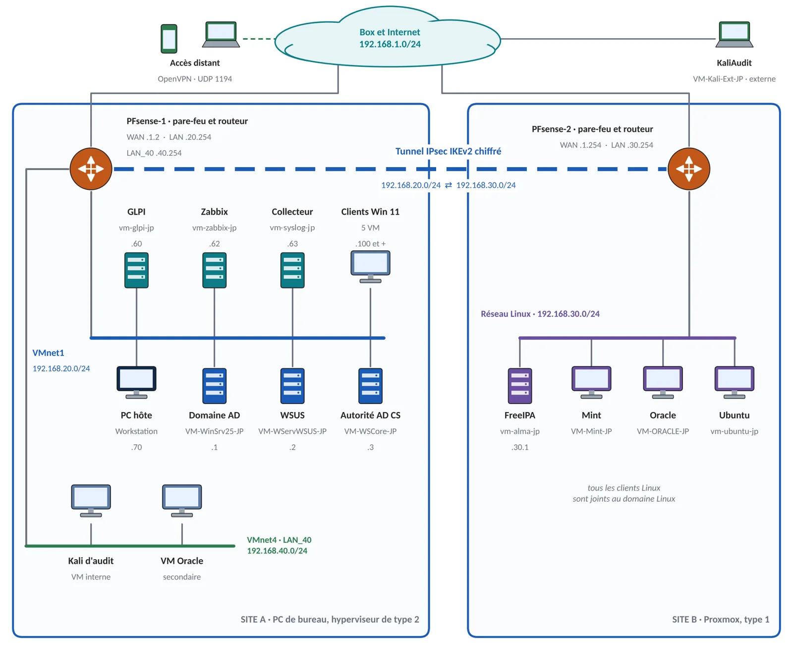
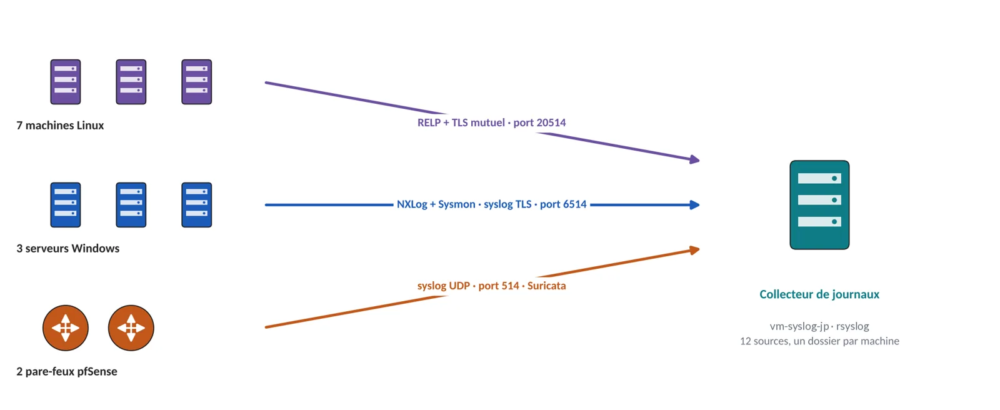
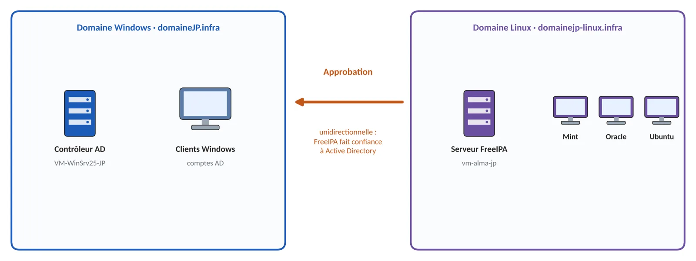

Inventaire · le parc du lab
Une infrastructure d'entreprise sur deux sites
Mon projet de formation m'a donné des bases solides : un domaine Windows, ses postes clients, un pare-feu, la supervision, les sauvegardes et restaurations, et la gestion des tickets. Sur ces fondations, j'ai construit un lab d'entreprise déjà étoffé, que je fais évoluer en continu pour le rapprocher au plus près de ce qu'on trouve en entreprise : un domaine Linux, un second site relié par un tunnel chiffré, des journaux centralisés et une détection d'intrusion.
Chaque chantier indique s'il relève du titre TSSR ou s'il va au-delà, et mon niveau réel : pratiqué, c'est-à-dire installé, testé, cassé, réparé et documenté dans un lab.
Tux · LinuxBienvenue dans le parc ! Deux sites, deux domaines, deux pare-feux, et un tunnel orange entre les deux.

Les chantiers
Ouvrez une ligne pour le détail.
01 Socle : virtualisation, adressage, pare-feuVMware Workstation · Proxmox VE · pfSense ×2 Titre TSSR Pratiqué En service
Deux sites : mon PC de bureau sous VMware Workstation (hyperviseur de type 2) et un ordinateur de 2014 recyclé sous Proxmox VE (type 1). Quatre réseaux, chacun derrière un pare-feu pfSense.
Ma méthode de filtrage : tout ce qui n'est pas explicitement autorisé est bloqué, et les règles s'écrivent à partir des flux observés dans le journal du pare-feu.
02 Postes et serveurs LinuxLinux Mint · Kali Linux · Oracle Linux · Ubuntu Titre TSSR Pratiqué En service
Les distributions vues en formation, toutes présentes dans le lab : Linux Mint et Ubuntu comme postes, Oracle Linux comme serveur, et Kali Linux sur deux postes d'audit, l'un à l'intérieur du réseau, l'autre à l'extérieur, pour vérifier que les défenses tiennent.
03 Domaine Windows et rôles d'entrepriseAD DS · DNS · DHCP · GPO · DFS · FSRM · WSUS · LAPS · AD CS Titre TSSR Pratiqué En service
Active Directory sur Windows Server 2025 : unités d'organisation, groupes selon le modèle AGDLP, sept GPO. Partages NTFS avec énumération basée sur l'accès, espace de noms DFS, quotas FSRM, WSUS en HTTPS, LAPS, serveur d'impression, et une autorité de certification interne qui délivre les certificats HTTPS des interfaces d'administration.
04 Supervision, inventaire, tickets et sauvegardesNagios XI · GLPI · Windows Server Backup · vzdump Titre TSSR Pratiqué En service
Nagios XI pour la supervision, GLPI pour l'inventaire par agent et les tickets (ceux de la page Compétences).
Sauvegardes testées : Windows Server Backup pour le contrôleur de domaine, export chiffré de la configuration des pare-feux, vzdump sur Proxmox, instantané avant toute action importante.
05 FreeIPA : un domaine d'identité pour le parc LinuxFreeIPA · AlmaLinux Au-delà du titre Pratiqué En service
FreeIPA sur AlmaLinux : LDAP, Kerberos, DNS, sudo par rôle. Les postes et serveurs Linux sont joints au domaine : un seul compte, une seule politique, au lieu de comptes locaux qui divergent.
06 Deux sites, un VPN IPsec et le trust AD ↔ FreeIPAIPsec IKEv2 · OpenVPN · approbation de forêt Au-delà du titre Pratiqué En service
Un tunnel IPsec IKEv2 relie les deux sites ; un accès distant OpenVPN (un certificat par appareil) est limité au PC hôte. Les deux domaines sont reliés par une approbation unidirectionnelle : FreeIPA fait confiance à Active Directory. C'est le chantier central du lab, détaillé plus bas.
07 Supervision et automatisationZabbix (Rocky Linux) · Ansible Au-delà du titre Pratiqué En service
J'ai choisi Zabbix parce qu'il revient souvent dans les offres d'emploi : agents, SNMP pour les pare-feux, API Proxmox en lecture seule. Ansible automatise le durcissement SSH, l'environnement shell et le déploiement des clés, avec une idempotence vérifiée en simulation.
08 Journaux centralisés et détection d'intrusionrsyslog (Debian) · RELP/TLS · NXLog · Sysmon · Suricata Au-delà du titre Pratiqué En service
Un collecteur rsyslog (VM-syslog-JP, sous Debian) reçoit 12 sources par trois canaux : RELP avec TLS mutuel pour les machines Linux, syslog en TLS via NXLog et Sysmon pour les serveurs Windows, syslog UDP pour les pare-feux. Il conserve et classe les journaux de toutes les machines. Suricata surveille le trafic sur les deux pare-feux.

Le chantier central : faire reconnaître un compte Windows sur Linux

Une personne ne doit avoir qu'un seul compte, celui d'Active Directory, et pouvoir pourtant ouvrir une session sur une machine Linux gérée par FreeIPA. Pour cela, j'ai relié les deux domaines par une approbation à sens unique, le trust cross-realm.
Quatre obstacles, dans l'ordre
- Le DNS, trois causes empilées : pas de zone de redirection, une zone non relue, puis la validation DNSSEC qui rejetait mon domaine interne. Chaque correction changeait le message d'erreur : un progrès de message est un progrès de diagnostic.
- L'horloge : 24 secondes d'écart, sous le seuil de Kerberos, mais sur une valeur qui dérive. Le contrôleur se synchronise désormais sur une source externe.
- La casse du nom d'hôte : le DNS l'ignore, Kerberos non.
- Un flux à deux extrémités : j'avais vérifié ce que FreeIPA écoutait, pas ce qu'il devait appeler (le catalogue global, port 3268).
La preuve par l'usage
Un compte Windows a le même identifiant Unix sur toutes les machines, obtient un ticket Kerberos délivré par le contrôleur Windows, et ouvre une session SSH sur un serveur Linux, avec la politique de mots de passe d'Active Directory. Le trust a survécu au remplacement du contrôleur de domaine et à la restauration de son état système.
Ce que le lab m'apporte
Un environnement complet sur machines virtuelles, construit pour reproduire les situations du métier : pannes, migrations, restaurations, sécurité. Il me permet d'arriver en entreprise avec des réflexes déjà pratiqués.
Comment j'ai construit le lab
Construire ce lab m'a demandé d'aller bien au-delà de ce que m'avait appris ma formation. Je l'ai fait avec une IA, utilisée comme formatrice : elle m'a appris à concevoir chaque chantier, à comprendre avant d'agir, et à chercher la cause d'une panne plutôt qu'un contournement. J'ai tout mis en pratique moi-même : installer, tester, casser, réparer, documenter. Chaque technologie du lab, je l'ai pratiquée, et chacune m'a fait progresser.
Pour aller plus loin
Le dossier de présentation détaille chaque chantier et les choix techniques ; la base de connaissances rassemble la documentation du lab.